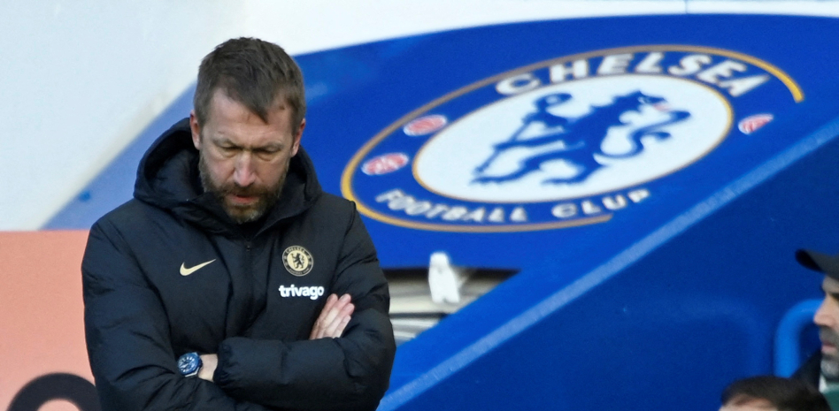

José Carlos Pérez
PERIODISTA

El Chelsea destituye a Potter...
Undécimo en la Premier League, descolgado a 12 puntos de las plazas de Champions, el Chelsea ha decidido destituir a Graham Potter como entrenador del club londinense.
Ir a ver
Matan a un carabinero durante un procedimiento policial
Un carabinero falleció en la madrugada de este jueves en Chile, tras recibir al menos dos disparos en su rostro...
Ir a ver